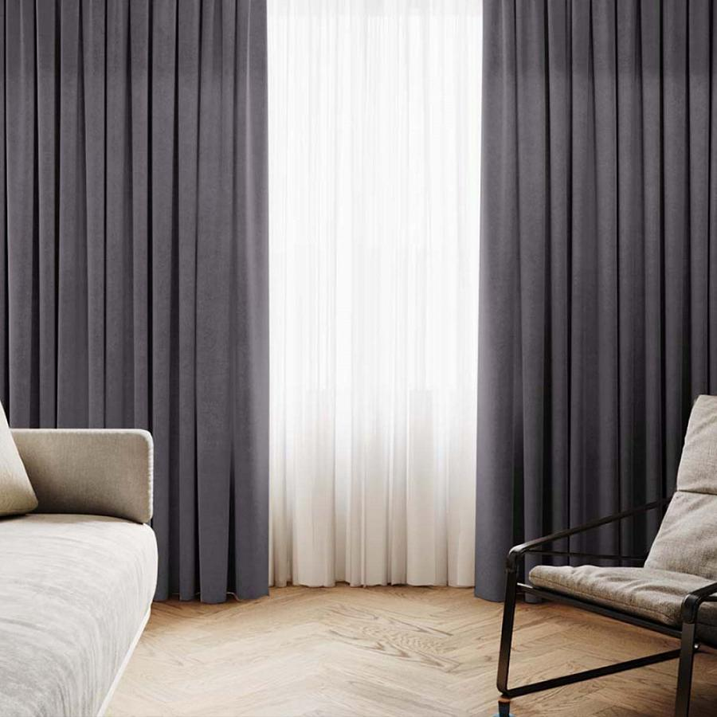
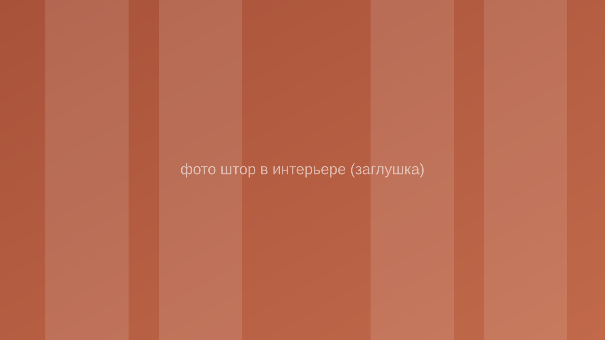
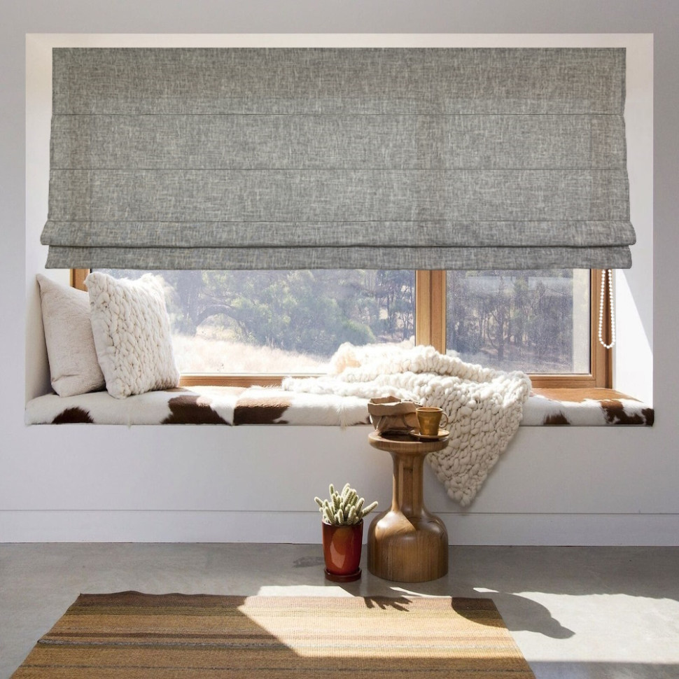
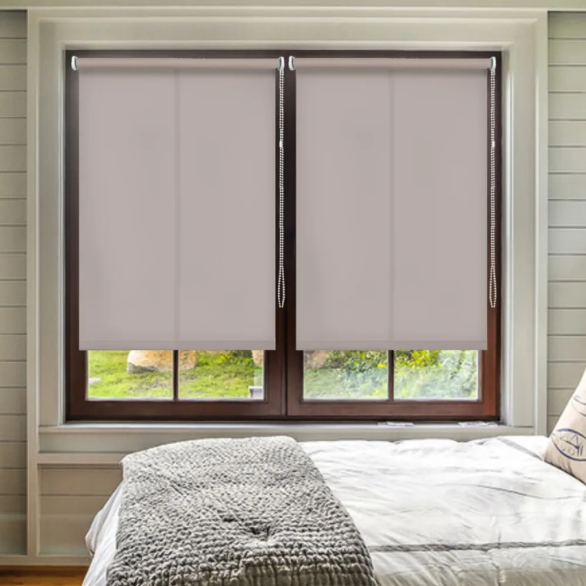
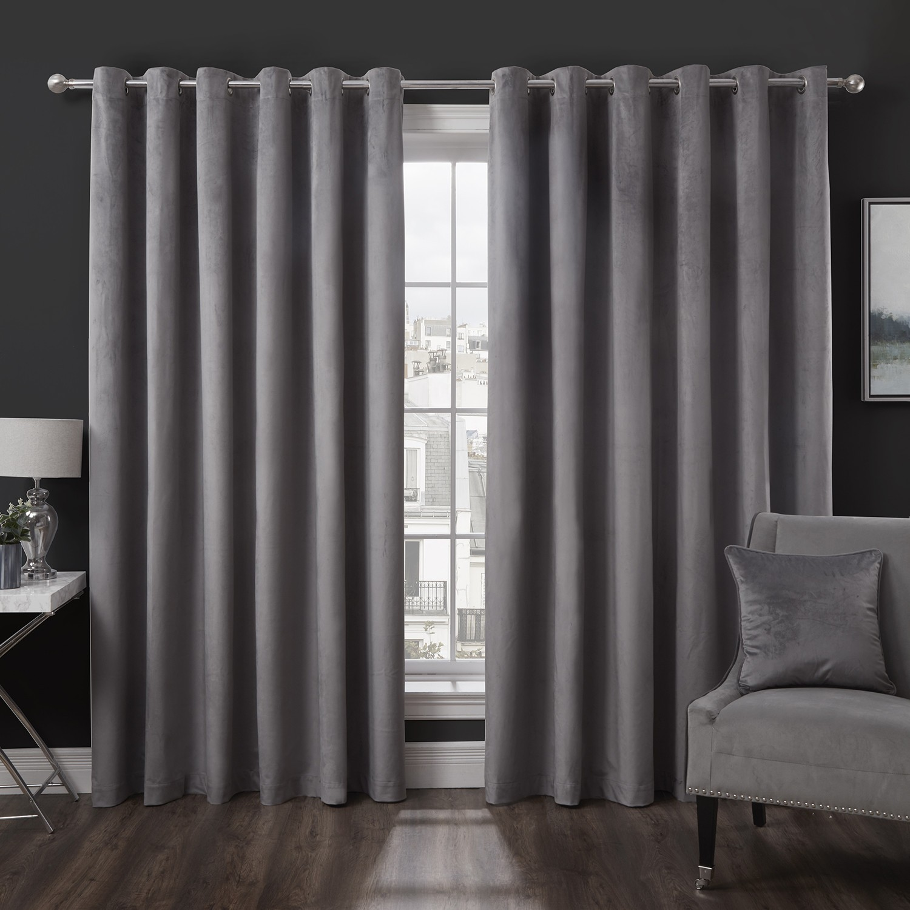
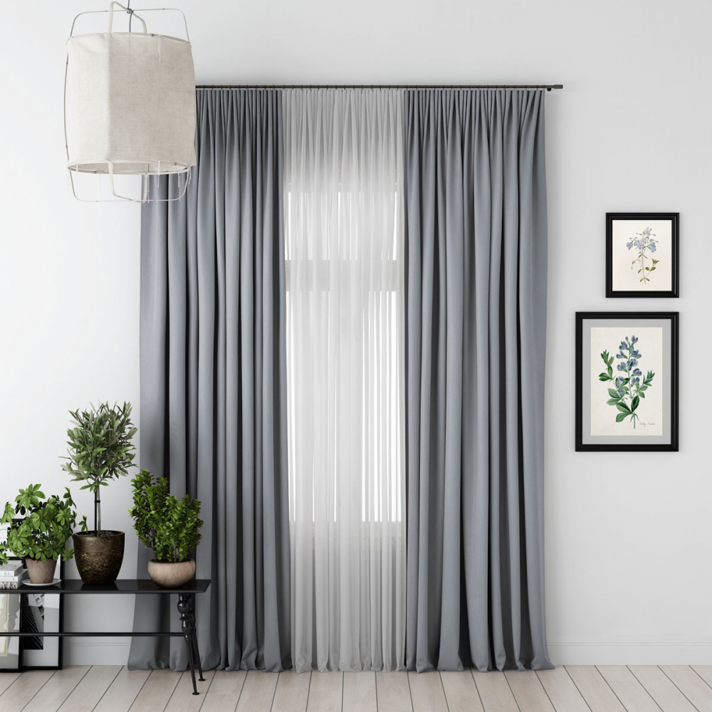

Классические
Плотные ткани, изящные складки и ламбрекены — для гостиных и спален в традиционном стиле.

Замер, пошив и установка штор за 3–5 дней. Работаем по городу и району — от консультации до монтажа карниза.
Заказать замерПодберём ткань, фактуру и тип крепления под ваш интерьер — от классики до минимализма.

Плотные ткани, изящные складки и ламбрекены — для гостиных и спален в традиционном стиле.

Лаконичные горизонтальные складки, экономят пространство — отлично смотрятся на кухне и в кабинете.

Компактный механизм, простое управление цепочкой или пультом, множество вариантов плотности ткани.

Полностью блокируют свет — для спальни, детской и комнат с окнами на солнечную сторону.

Лёгкие, воздушные ткани — наполняют комнату мягким светом и завершают композицию окна.
Берём на себя все этапы — от первого звонка до готового окна.
Мастер выезжает на дом в удобное время, делает точные замеры окна и проёма, помогает определиться с тканью, цветом и типом карниза.
Монтаж карниза или направляющих, навеска штор, регулировка механизма (для рулонных и римских штор), уборка после монтажа. Работаем аккуратно, без пыли и мусора.
Выезжаем по Минеральным Водам и району — в удобный день и время, без задержек и переносов.
Четыре простых шага от заявки до готового окна в Минеральных Водах и районе.
Пишете в WhatsApp, Telegram или звоните — уточняем удобное время визита мастера.
Мастер приезжает домой, замеряет окно и помогает подобрать ткань и карниз.
Согласовываем дизайн, шьём шторы по индивидуальным размерам в короткие сроки.
Монтируем карниз и вешаем шторы — окно готово, мусора не остаётся.
Даём гарантию на пошив и фурнитуру, переделываем за свой счёт при браке.
Пошив и установка за 3–5 дней с момента замера — без долгих ожиданий.
Несколько лет шьём и устанавливаем шторы для квартир, домов и офисов.
Работаем в Минеральных Водах и окрестных населённых пунктах — приедем к вам.
Убираем за собой после установки — никакой пыли и упаковки в доме.
Подбираем ткани и решения под бюджет и стиль именно вашего интерьера.